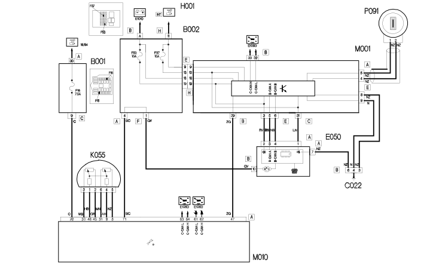

E7010 LANCIA CODE WIRING DIAGRAM
- Path
- Electrical equipment > ELECTRICAL FUNCTIONS > E70 VEHICLE ELECTRONIC SYSTEMS > E7010 CODE > E7010 LANCIA CODE WIRING DIAGRAM
- Kind
- topic
- Applies to
- engines: 2.4 JTD 20V; all production periods
- Interactive page
- https://sloeber94.github.io/elrnDB-lThss/en/#/841008297
Applies to: engines: 2.4 JTD 20V; all production periods
Wiring Diagram
